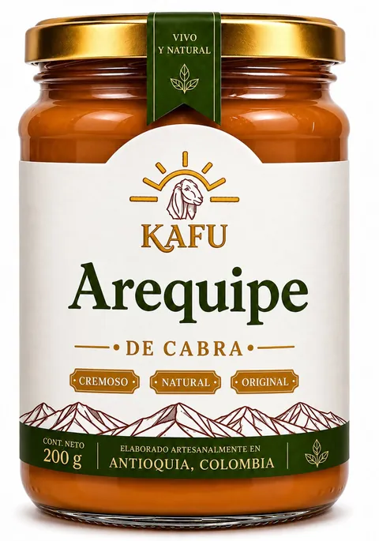
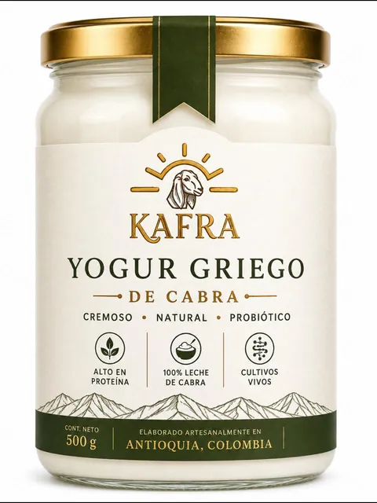
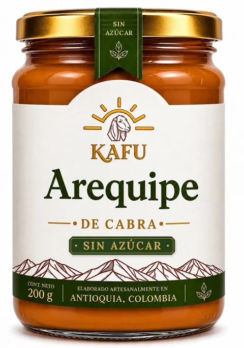
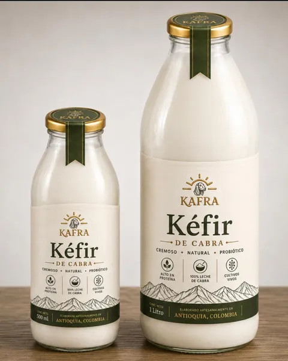

Arequipe de cabra
Frasco de vidrio · 200 g
Cremoso · Natural · Original
Lácteos artesanales de cabra
Arequipe, yogur griego y kéfir hechos a mano, en pequeños lotes, con leche de nuestras cabras.
Domicilios en [CIUDADES]


Nuestros productos
Elige el tuyo y te lo apartamos por WhatsApp.
Frasco de vidrio · 200 g
Cremoso · Natural · Original

[presentación]
Cremoso · Natural
Frasco de vidrio · 500 g
Cremoso · Alto en proteína · Cultivos vivos

500 ml1 L
Natural · Probiótico · Cultivos vivos
¿Por qué leche de cabra?
El yogur griego, colado despacio, queda espeso y rico en proteína.
Sin mezclas: solo leche de cabra de nuestra finca.
Yogur y kéfir fermentados con cultivos vivos, sin apuros.
Muchas personas la sienten más suave que la de vaca.
Nuestro origen
En [NOMBRE DE LA FINCA / MUNICIPIO] cuidamos nuestras cabras y ordeñamos cada día. Con esa leche fresca preparamos todo en pequeños lotes, sin afanes, y lo envasamos en vidrio.
Ordeño diario en la finca.
Elaboración artesanal, lote por lote.
Envasado en vidrio y listo para tu nevera.
Cómo pedir
Un mensaje por WhatsApp y te atendemos.
Arequipe, yogur o kéfir: arma tu pedido.
Coordinamos día y hora de entrega.
Domicilios en [CIUDADES]
Empezar mi pedidoLo que dicen en casa
[Reseña de cliente: qué producto probó y qué le gustó.]
[Reseña de cliente: qué producto probó y qué le gustó.]
[Reseña de cliente: qué producto probó y qué le gustó.]
Preguntas frecuentes
El yogur y el kéfir van siempre en nevera. El arequipe, en un lugar fresco y, una vez abierto, en nevera. [Confirmar temperaturas.]
Yogur y kéfir: [X] días. Arequipe: [X] semanas. La fecha exacta va impresa en cada frasco.
Sí, en [CIUDADES]. Escríbenos por WhatsApp y coordinamos día y hora. [Costo o pedido mínimo.]
[Nequi, Daviplata, transferencia o efectivo contra entrega.]
La leche de cabra también tiene lactosa, aunque muchas personas la toleran mejor; en el yogur y el kéfir la fermentación reduce parte de ella. Si tienes alergia a la proteína de la leche de vaca, la de cabra no suele ser una alternativa. Ante cualquier duda, consulta con tu médico.
¿Otra pregunta? Escríbenos por WhatsApp
Arequipe, yogur griego y kéfir de cabra, directo de Antioquia a tu nevera.
Pedir por WhatsApp